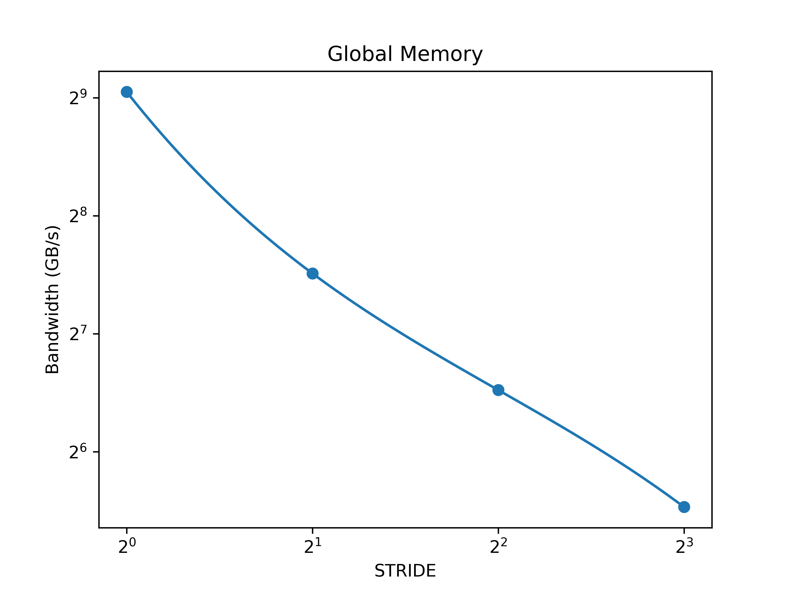
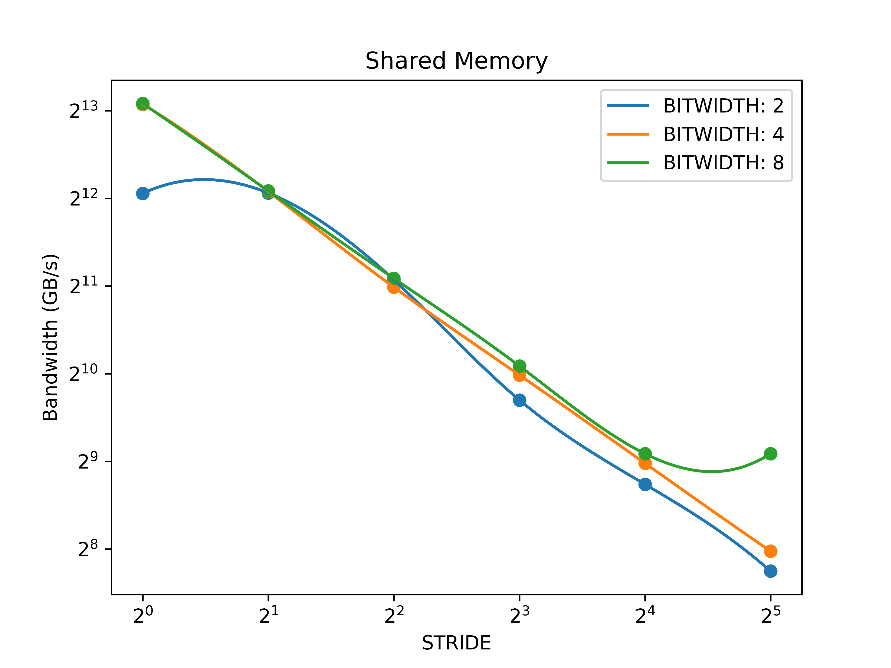

分析 test_gmem.cu 的性能变化来源
1
2
3
4
__global__ void stride_copy(float *dst, float *src) {
int i = blockIdx.x * blockDim.x + threadIdx.x;
dst[i * STRIDE] = src[i * STRIDE];
}

性能变化的主要来源是 GPU 的哪种机制引起的？
访存合并机制.
这种机制如何影响该程序的性能？
在 DRAM, L2 cache, L1 cache 之间传输数据的最小单元为 1 sector = 32 Bytes. DRAM 访问总量为 size * STRIDE * sizeof(float) 与 STRIDE 成正比. 因此 STRIDE 越大, 程序访问的 transaction 个数越多, 且近似呈正比, 导致性能反比下降.
是否有其他的硬件功能参与了该程序的执行过程, 它们会如何影响该程序的执行效率？
cache. 顺序访问时, 数据会被缓存在 cache 中, 从而减少对 DRAM 的直接访问, 提升性能.
分析 test_smem.cu 的性能变化来源
1
2
3
4
5
6
7
8
9
10
11
12
13
14
15
16
__global__ void test_shmem() {
#if (BITWIDTH == 2)
volatile __shared__ uint16_t shm[32 * 128];
volatile uint16_t tmp;
#elif (BITWIDTH == 4)
volatile __shared__ uint32_t shm[32 * 128];
volatile uint32_t tmp;
#elif (BITWIDTH == 8)
volatile __shared__ uint64_t shm[32 * 128];
volatile uint64_t tmp;
#endif
for (int i = 0; i < times; i++) {
tmp = shm[threadIdx.x * STRIDE];
}
}

固定 BITWIDTH 时, 程序的性能变化来源于哪种硬件机制？
bank conflict.
BITWIDTH 设置为 2,8 时性能变化的趋势相比于 BITWIDTH 设置为 4 时有什么不同之处, 请解释.
BITWIDTH 设置为 4 时, bandwidth 随着 STRIDE 的增大而减小. BITWIDTH 设置为 2 时, STRIDE 为 1 和 2 时 bandwidth 几乎相等, 而后变化趋势与 BITWIDTH 设置为 4 时基本相同. BITWIDTH 设置为 8 时, STRIDE 为 16 和 32 时 bandwidth 几乎相等, 在这之前的变化趋势与 BITWIDTH 设置为 4 时基本相同.
当 BITWIDTH 为 4 时, 访存粒度为 4 Bytes = 1 bank, 相邻两个 thread 访问地址间隔为 STRIDE 个 bank. 当 STRIDE 为 1 时, 同一 wrap 内的 32 个 thread 访问了第一行内的 32 个 bank, 不存在 bank conflict. 当 STRIDE 为 2 时, threadIdx.x 与 threadIdx.x + 16 访问同一 bank, 发生 2-way bank conflict. 当 STRIDE 为 4 时, threadIdx.x, threadIdx.x + 8, threadIdx.x + 16, threadIdx.x + 24 访问同一个 bank, 发生 4-way bank conflict. 类似的, STRIDE 为 8 和 16 时分别发生 8-way bank conflict 和 16-way bank conflict.
当 BITWIDTH 为 2, STRIDE 为 1 时, 相邻两个 thread 访问同一个 bank, 发生 2-way bank conflict, 共访问 16 个 bank. 而 STRIDE 为 2 时, 虽然没有 bank conflict, 但需要访问 32 个 bank. 但由于每次访问仅使用 0.5 bank, 带宽为理论峰值的一半. 因此 STRIDE 为 1 或 2 时性能相近.
当 BITWIDTH 为 8, STIRDE 为 16 时, 相邻两个 thread 访存地址间隔为 128 Bytes, 恰为一行. 这意味着, 所有 thread 都访问 bank-0 和 bank-1, 发生 32-way bank conflict. 而当 STRIDE 为 32 时, 相邻两个 thread 访存地址间隔为 256 Bytes, 为两行, 此时所有 thread 仍都访问 bank-0 和 bank-1, 发生 32-way bank conflict. 因此 STRIDE 为 16 或 32 时性能相近.
Performance
Global Memory
| Stride | Bandwidth (GB/s) |
|---|---|
| 1 | 530.015 |
| 2 | 182.471 |
| 4 | 91.9932 |
| 8 | 46.2866 |
Shared Memory
| Bitwidth | Stride | Bandwidth (GB/s) |
|---|---|---|
| 2 | 1 | 4258.05 |
| 2 | 2 | 4270.88 |
| 2 | 4 | 2149.69 |
| 2 | 8 | 831.405 |
| 2 | 16 | 427.135 |
| 2 | 32 | 215.022 |
| 4 | 1 | 8607.33 |
| 4 | 2 | 4315.77 |
| 4 | 4 | 2027.46 |
| 4 | 8 | 1012.86 |
| 4 | 16 | 504.37 |
| 4 | 32 | 251.766 |
| 8 | 1 | 8657.57 |
| 8 | 2 | 4339.44 |
| 8 | 4 | 2173.55 |
| 8 | 8 | 1087.65 |
| 8 | 16 | 544.069 |
| 8 | 32 | 544.068 |